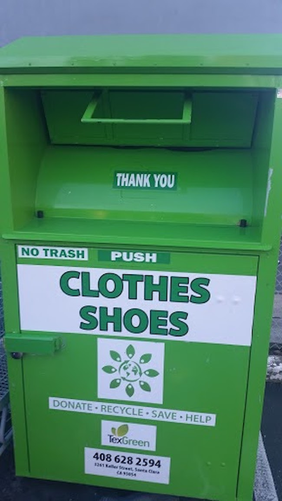
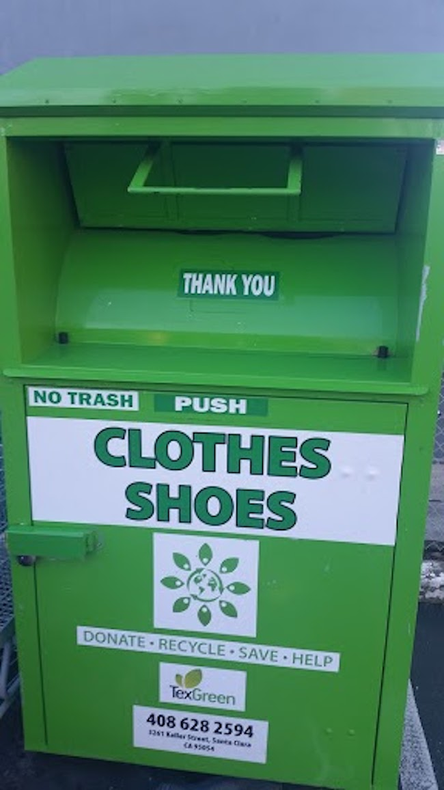

Where to Donate?
It's easier to release your things into the world when you know of a charity that speaks to your heart
Charities Help in Many Ways
"Breaking the Cycle of Homelessness," formerly InnVision Shelter Network. New and gently-used items are given directly to homeless families and individuals in the program to help them return to permanent housing and ongoing self-sufficiency. There are several Bay Area locations that accept donations, such as San Mateo, Menlo Park, Palo Alto and San Jose. Visit their website for items in need and also items that are not accepted. Read More

Donate needed items directly to the PHS shelter in San Mateo to help the animals there. A wish list can be found on their website here. Alternatively, you may forward your donations to The Pick, a thrift store in Burlingame operated by The Peninsula Humane Society & SPCA. All proceeds directly benefit the shelter animals. Amongst the list of items accepted are furniture, housewares, clothing and more. Visit their website for a complete list or to schedule a furniture pick-up. Read More
The Salvation Army accepts furniture, appliances, mattresses, household goods, clothing and even vehicles. Items must be in good, working condition and may not be accepted if stained. You'll find a value guide on their website to help in determining an approximate tax-deductible value of some commonly donated items. Call to schedule a free pick-up in your area. Read More
Examples of accepted items include gently used clothing, household goods, bedding and small appliances in working order. Wedding dresses accepted! Some locations accept furniture donations. Read More
One warm coat accepts clean and gently used coats and jackets. Aside from annual organized coat drives in the fall and winter months, there are several local agencies that will gladly accept your donation. Read More
Textile Recycling Bins
 

When clothes and shoes are too worn to donate to charity, there are collection boxes located within communities to keep them out of our landfill. Organizations such as Recycle for Change offer the power to preserve a significant amount of resources by reusing and recycling textiles through this convenient solution. Other textile recycling companies such as TexGreen also remind us that damaged clothes and linens should no longer be considered as garbage. Efforts such as these can help to keep our planet sustainable.